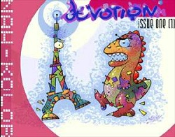
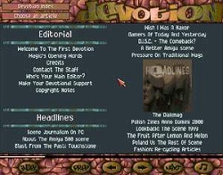
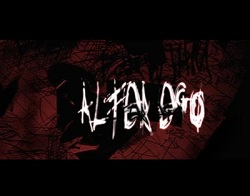
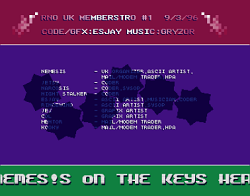
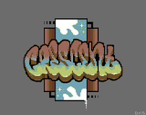
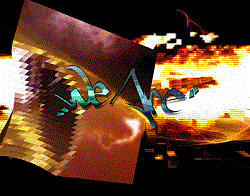

Interview with Darkus (a.k.a. Nemes!s)

FuZioN: Hi Darkus, please introduce yourself.
Darkus: My real name, as some of you may remember is Lee Harwood and I'm now 33 years old still residing in the North East of England. Better known as Nemes!s in years gone by before renaming to Darkus somewhere along the way!
FuZioN: How and when did you find the Amiga demoscene?
Darkus: My journey into the realm of the amiga demo scene began around December 1993 when I decided to go to a local computer club to get copies of the latest games. After a few weeks of filling my disk box with all the latest gems I began to take notice of another guy's screen who attended the same club.
Each week he would have these amazing looking graphics and sounds coming from his machine. Being only 13/14 at the time I was a fan of 2 Unlimited (the truth always comes out!) and he had what sounded like CD quality 2 Unlimited tracks playing with some cool looking sine waves on his Amiga. I eventually plucked up the courage to ask what it was and for my own copy. I was astonished it was possible to do this on the Amiga and we began to talk further about these kind of productions. (It was U2 by Scoopex by the way). We began to speak every week at this club and before long I was getting more and more interested in the cracktros on the disks. This guy who I am still friends with today was called Messiah and he opened my eyes to the hidden delights of the Amiga demo scene.
After reading the scrollers in various productions over and over I decided to contact a few people. Not really knowing what I was doing I wrote (yes wrote on paper!) letters to TBC of RNO and Michael of Anathema. Both of whom replied and from that point on, I was hooked!
FuZioN: What are your fondest memories of the Amiga scene?
Darkus: Aside from all the fantastic productions, I feel it was an honour to be part of such an amazingly talented subculture of some great people from all over the world. A lot of people say the scene was already dying by 1995 but for me, 1994 to 2004 really was a fantastic time to be involved. The magic of it all will stay with me forever as well as some great friends I've made along the way. It's impossible to explain or for outsiders to understand just how special it was. Although in many respects, that's part of the magic!
It's fair to say, seeing my name in the Eurocharts and Showtime was always a great buzz and the noise when the post man popped a few disks through the letterbox is a very fond memory too!
Lastly, releasing my own diskmag “Devotion” was definitely a feeling of “I've finally reached my goal” type of moment!
FuZioN: What scene groups were you a member of?
Darkus: A few...
Scene groups: RNO, Anathema, Nuance, Freezers, Digital, Skid Row, Rebels, Nah-Kolor, Haujobb, Mangoo
Ascii groups: Save Our Souls, Low Profile, Aerosol
Music Groups: Poise Records

FuZioN: Name some of your all time favourite Amiga demoscene productions/groups.
Darkus: Very hard question, but the ones that remain in memory are Desert Dream by Kefrens. Laxity is pure genius in this production, code, design and a killer soundtrack! Raw diskmag with the legendary Lord Helmet/Spaceballs at the helm was the production that persuaded me to begin writing articles. Another diskmag would have to be Seenpoint by Scoopex. Fishwave almost single handily wrote all issues and it was one of the first mags I wrote for. Other demos, I'd say Nexus 7 by Andromeda, Rise by Mellow Chips, Switch Back by Rebels, Chromagic by DCS, Control by Oxygene and most productions by Polka Brothers, Jetset, Sanity, Virtual Dreams, Bomb, Complex,.. the list could go on forever!!
FuZioN: Are you still in contact with any ex-group members or sceners?
Darkus: Yes, still in contact with a handful! Wade/Fairlight, Magic/Nah-Kolor, Sane/Scoopex, Messiah/Prophets, Michael/Anathema, Genetix/Darkage and probably a bunch others I just can't remember right now!! Oh.. not forgetting Chromag/Rebels.. I still want my Chromagic disks back haha!!
FuZioN: What were your favourite productions that you worked on during the main years of the scene?
Darkus: Working on Devotion diskmag was great fun, having control of the content and design/style was everything I always wanted as a scener! (Thanks to all the guys that worked on this, Drareg/Ozone, Xenon/Iris, Adam/DCS, Magic/Nah-Kolor, Wade/Fairlight, Sane/Scoopex, Teis/Spaceballs, Alvin/Nah-Kolor and everyone else that contributed!!) Along side this I always supported other mags like Seenpoint, Generation, Jurassic Pack, Showtime, Trashcan and so on. I released a few songs in productions along the way, can't remember names now!! In the later years I really enjoyed working with Wade and ShanetheWolf under our hidden aliases in Fearmoths.
FuZioN: You were very active in the ascii scene and produced 50 collys. How did you end up being part of this crazy subculture?
Darkus: Not sure if I can exactly remember where the interest began. Messiah who introduced me to the scene was into ascii and I believe he gave me a disk that featured a DIR full of bbs adds. I remember looking through them (not even fully aware what they were for) and being amazed at these graffiti like style pieces of keyboard art. It wouldn't have been long after that I persuaded my parents to buy me a modem and I was calling the boards and sending my own attempt at ascii to the sysops for them to use on their boards. If I remember correctly I opened my own ascii group called Sukmas but I don't think that lasted too long.
Groups such as Arclite, Mo'Soul, Epsilon Design amongst a few others always really inspired to me to get involved. Made many great friends over the years and a few enemies along the way too. I think it was 1997 or 1998 when I started my own group, this time called Aerosol and was more successful second time round. The group is still alive today... some 16 years later!!
FuZioN: Are you currently working on any projects when time restraints allow?
Darkus: The last couple of years have been extremely inactive for me. I did some pixel work on C64, a few tracks on Fruity Loops and that's pretty much it!
FuZioN: Did you regularly frequent any BBSes? If so, which ones?
Darkus: I loved the whole BBS scene, I was frequently on Digital Candy, Permanent Vacation, Los Endos, Boondocks, The Yard, Graveyard amongst many others I've forgotton! I ran my own BBS “Unity” for a little while using AmiExpress however this didn't go down too well with the parents when non-modem callers couldn't get through as the modem picked up all incoming calls automatically hehe...
FuZioN: Are you still running any classic Amigas? If so, what models?
Darkus: I still have my Amiga 1200 and all the kit, sadly the HD won't boot up but can still run a handful of the disks I've kept. Nowadays instead of even running WinUAE, I jump straight into You Tube!
FuZioN: What scene parties have you attended?
Darkus: I went to Dejavu 2 in 1999 where I met some great people.. Optic/DCS, Devistator/DCS, Boo/Talent, Dvize/Limited Edition to name a few and then later Sundown in 2006.
FuZioN: Do you follow the PC demoscene at all?
Darkus: I had a little journey into the PC scene when I set up a small group called Mangoo. We only released one production which you can download from Pouet.net.
FuZioN: Are there moments when you feel nostalgic, thinking back to the best years of the Amiga scene?
Darkus: I occasionally track back looking at old productions on You Tube and definitely love going down nostalgia lane. I basically grew up on the scene. Starting at 13/14 years old right the way through to 30! A lot of the old productions and tracks are linked to memories from those time periods. Like I've said earlier, the memories will be a part of me forever!!
FuZioN: What is your day job?
Darkus: System Engineer but in reality that means buyer/quality systems.. amongst other stuff.. (oil and gas/defence engineering company)
FuZioN: How do you relax/unwind/chill the hell out?
Darkus: Still have a big passion for music but I can mostly be found every day at the gym unwinding or chilling out on the Xbox. The odd binge session or bender weekend thrown in for good measure too!
FuZioN: What music are you into?
Darkus: Everything from drum and bass to more laid back ambient chill out tracks.
FuZioN: This is your spam area.. feel free to advertise any web presence, be it Fbook/Twatter/URL/other.
Darkus: I can be found lurking on Facebook nowadays, other than that you can find my parents address in most good diskmags over the last 15 years if you wish to send me some snail mail! Please remember to send the stamps back though!! :-)
FuZioN: Thanks for taking part in the interview mate. Any final words of wisdom?
Darkus: Be creative, good night! :-)